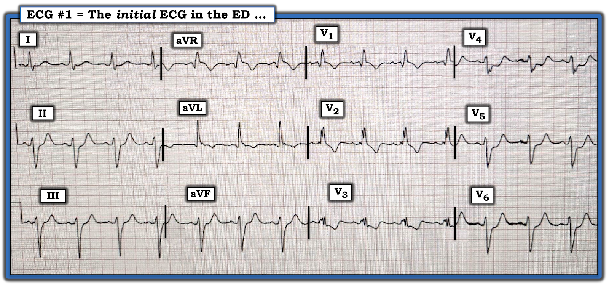
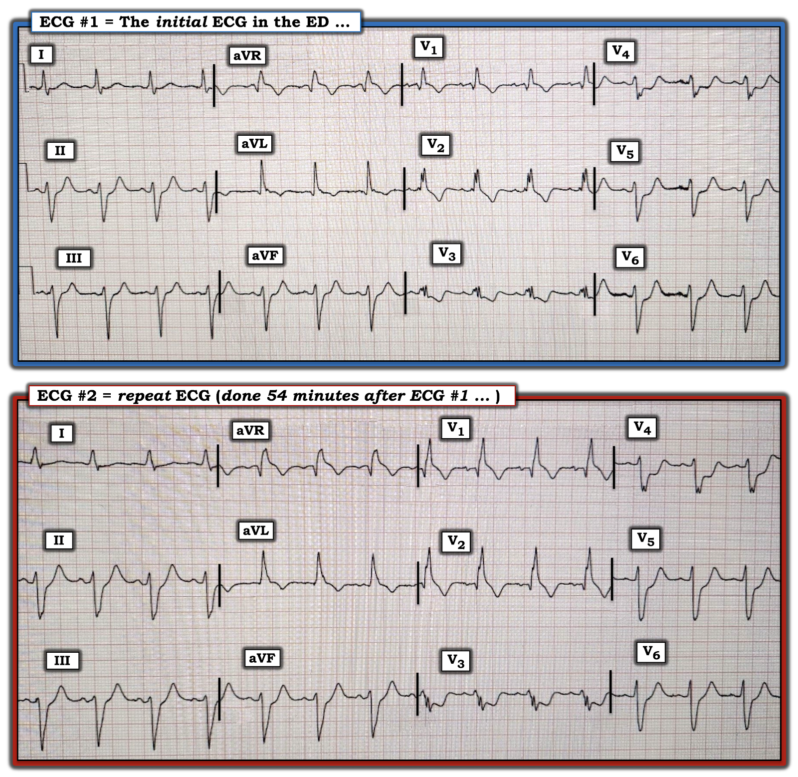
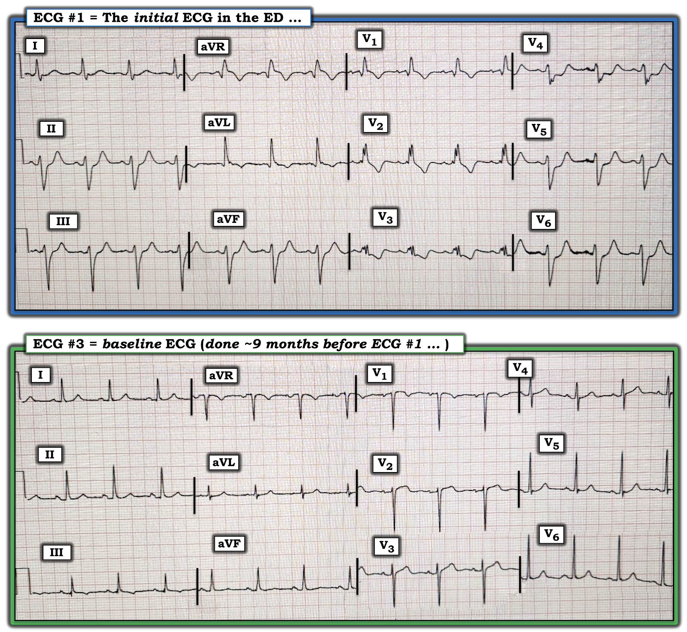
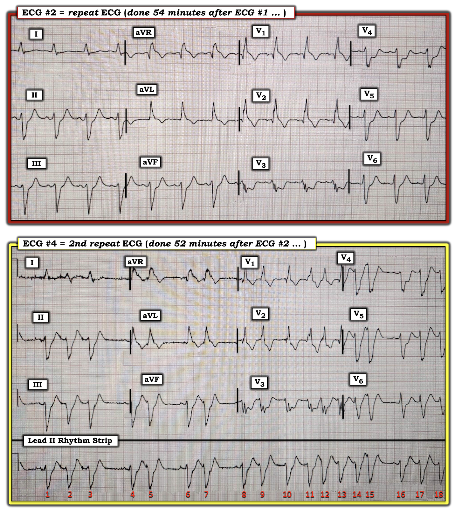

ECG Blog #381 — Vì sao troponin bình thường?
Điện tâm đồ ở Hình 1 được ghi từ một người đàn ông khoảng 60 tuổi có tiền sử bệnh mạch vành (bao gồm cả phẫu thuật bắc cầu chủ vành (CABG) trước đây) — đến khoa Cấp cứu (ED — Emergency Department) vì mới xuất hiện CP (đau ngực — Chest Pain) kéo dài 3 giờ, vã mồ hôi và buồn nôn/nôn.
- Bệnh nhân tụt huyết áp vào thời điểm ghi điện tâm đồ ban đầu ở Hình 1.
Quyết định được đưa ra là không thông tim ngay — vì không có ST chênh lên ở Hình 1 — và vì troponin ban đầu âm tính.
- BẠN có đồng ý với quyết định không thông tim vào thời điểm này?
- Bạn đọc điện tâm đồ #1 như thế nào?


NHỮNG SUY NGHĨ BAN ĐẦU của tôi về CA BỆNH HÔM NAY:
Bối cảnh lâm sàng của ca hôm nay cực kỳ đáng lo ngại:
- Bệnh nhân có tiền sử bệnh mạch vành đã biết.
- Triệu chứng đau ngực là mới! Các triệu chứng này đi kèm vã mồ hôi, buồn nôn/nôn — và đặc biệt đáng lo là tụt huyết áp! Ngay cả trước khi nhìn vào điện tâm đồ ban đầu — bối cảnh lâm sàng đã gợi ý nhiều khả năng cần thông tim sớm cho đến khi chứng minh được điều ngược lại!
Diễn giải Điện tâm đồ #1:
Ở Hình 1 thấy nhịp xoang bình thường tần số ~80-85 lần/phút. Khoảng PR bình thường — nhưng QRS rộng, với hình dạng QRS phù hợp với RBBB (blốc nhánh phải — Right Bundle Branch Block) và LAHB (blốc phân nhánh trái trước — Left Anterior HemiBlock). Không có lớn buồng tim.
Về Thay đổi Q-R-S-T:
- Có sóng Q ở chuyển đạo aVL "có ý nghĩa" — xét theo độ rộng của nó so với sóng R ở chuyển đạo này. Điều này có thể phản ánh nhồi máu vùng bên cao vào một thời điểm nào đó. Không có sóng Q nào khác (ví dụ, thực sự có một sóng r khởi đầu rất nhỏ ở chuyển đạo V1).
- Tăng tiến sóng R — không còn ý nghĩa, do có RBBB.
Về Thay đổi ST-sóng T:
- Bất thường "đập vào mắt" nhất nằm ở chuyển đạo V3 và V4 — cả hai đều cho thấy ST chênh xuống bất thường rõ ràng. Phức bộ QRS rất nhỏ (đồng thời bị phân mảnh) ở chuyển đạo V3 — với điểm J chênh xuống không tương xứng, tiếp theo là đoạn ST dạng vòm, dốc xuống, kèm phần cuối sóng T hai pha bất thường. ST chênh xuống dạng bậc thềm (shelf-like) ở chuyển đạo V4 không bao giờ là bình thường, và phần cuối sóng T dương thấy ở chuyển đạo này cũng vậy. Sóng S ở chuyển đạo V4 cũng bị phân mảnh (tức là dấu hiệu của "sẹo" và/hoặc nhồi máu cũ).
- ST chênh xuống bất thường tiếp tục ở chuyển đạo V5 và V6, mỗi chuyển đạo đều có sóng T nổi bật (? tối cấp). Hình dạng QRST của 2 chuyển đạo trước tim bên này trông rất giống hình dạng QRST ở mỗi chuyển đạo thành dưới (dù điểm J chênh xuống ít hơn ở các chuyển đạo thành dưới).
- Có đoạn ST dạng vòm và sóng T đảo ngược ở chuyển đạo aVL.
- Có ST chênh lên đáng kể ở chuyển đạo aVR.
- Cuối cùng, ở chuyển đạo V1 — ST-T chênh xuống là điều được dự đoán với RBBB — nhưng ST chênh lên kín đáo-nhưng-có-thật ở chuyển đạo này thì không được dự đoán với RBBB đơn thuần.
Tổng hợp lại tất cả:
Điều còn thiếu trong bệnh cảnh lúc này — là một điện tâm đồ trước đây (điện tâm đồ nền) của bệnh nhân này, người có tiền sử đã biết bệnh mạch vành đáng kể. Vì vậy — ban đầu tôi không chắc đâu là "mới" so với đâu là "cũ". Dù vậy:
- Có blốc hai phân nhánh (RBBB/LAHB) — nếu là mới, đây sẽ là một dấu hiệu cực kỳ đáng lo ngại.
- Nhiều chuyển đạo cho thấy đoạn ST thẳng đuỗn bất thường, kèm ST chênh xuống. ST chênh xuống này có vẻ tối đa ở các chuyển đạo V3 đến V5 — điều này có thể phản ánh OMI thành sau cấp (nhồi máu cơ tim do tắc — Occlusion-based Myocardial Infarction) — nhiều khả năng nhất kèm bệnh nhiều nhánh mạch vành (tức là thiếu máu cục bộ dưới nội tâm mạc lan tỏa, được gợi ý bởi ST chênh xuống kèm ST chênh lên ở aVR>V1).
- Bệnh nhân này mới đau ngực — và — đang tụt huyết áp.
- ĐIỀU CỐT LÕI: Troponin ban đầu bình thường — và việc không có ST chênh lên không phải là lý do để không thông tim. OMI thành sau cấp gây ST chênh xuống, chứ không phải ST chênh lên (và ST chênh xuống này thường tối đa ở các chuyển đạo V2 đến V4). Troponin tăng đôi khi chậm trễ. Ngay cả khi không có tắc mạch vành cấp trong ca hôm nay — thì các dấu hiệu thiếu máu cục bộ dưới nội tâm mạc lan tỏa ở một bệnh nhân có blốc hai phân nhánh và bệnh mạch vành đã biết — đến viện vì đau ngực mới kèm tụt huyết áp — là chỉ định rõ ràng để kích hoạt phòng thông tim ngay lập tức tại thời điểm này của ca bệnh.
==========================
Ca bệnh tiếp diễn:
Một điện tâm đồ khác được ghi 54 phút sau điện tâm đồ #1. Tiếc là — tôi không có thông tin về triệu chứng và huyết động của bệnh nhân vào thời điểm ghi điện tâm đồ #2.
Để dễ so sánh, ở Hình 2 — tôi đặt 2 điện tâm đồ này cạnh nhau.
- Bạn đọc điện tâm đồ #2 như thế nào khi đối chiếu với bản ghi ban đầu được ghi 54 phút trước đó?


SUY NGHĨ CỦA TÔI về điện tâm đồ ghi lại:
Hình dạng QRS ở điện tâm đồ ghi lại gần như giống hệt bản ghi ban đầu — nghĩa là việc so sánh từng chuyển đạo để tìm những khác biệt tinh tế về hình dạng ST-T sẽ có giá trị.
- Giờ đây có sóng Q ở chuyển đạo V1 và V2 của điện tâm đồ #2 — mà trước đó không có.
- ST chênh lên nhiều hơn ở chuyển đạo aVR và V1.
- ST chênh xuống nhiều hơn ở gần như tất cả các chuyển đạo so với điện tâm đồ #1.
- NHẬN ĐỊNH: Các dấu hiệu điện tâm đồ của thiếu máu cục bộ dưới nội tâm mạc lan tỏa đã tăng lên rõ rệt. Cần tái tưới máu mạch vành khẩn cấp.
==========================
Đã tìm được Điện tâm đồ nền:
Đã tìm được một điện tâm đồ trước đây của bệnh nhân hôm nay, ghi cách đó ~9 tháng. Để dễ so sánh, ở Hình 3 — tôi đặt bản ghi nền này cạnh điện tâm đồ ban đầu của ca hôm nay.
- Chúng ta rút ra được gì từ điện tâm đồ nền?


SUY NGHĨ CỦA TÔI về điện tâm đồ nền:
Mặc dù tôi không có thông tin về thời điểm ghi điện tâm đồ nền so với cuộc phẫu thuật bắc cầu của bệnh nhân — nhưng 9 tháng trước, QRS hẹp và không có bằng chứng của bất kỳ rối loạn dẫn truyền nào. Ngoại trừ ST-T dẹt nhẹ, không đặc hiệu ở các chuyển đạo thành dưới — điện tâm đồ #3 về cơ bản là một bản ghi bình thường!
- NHẬN ĐỊNH: Bản ghi nền xác nhận rằng mọi dấu hiệu mô tả ở trên trên điện tâm đồ #1 đều là cấp tính!
==========================
KẾT LUẬN CA BỆNH:
Một điện tâm đồ 12 chuyển đạo cuối cùng được ghi ở bệnh nhân hôm nay — để dễ so sánh, ở Hình 4, tôi đặt nó cạnh điện tâm đồ #2.
- Tiếc là — tôi không có thông tin về trình tự các can thiệp điều trị, cũng như về tương quan giữa triệu chứng của bệnh nhân, huyết động và thời điểm cụ thể của từng điện tâm đồ liên tiếp này.
- Vào một thời điểm nào đó ~1-2 giờ sau điện tâm đồ ban đầu — bệnh nhân xuất hiện các cơn VT, dẫn đến ngừng tim. Bệnh nhân không thể hồi sức thành công.
Có những bài học cần rút ra từ ca này. Tôi đưa điện tâm đồ 12 chuyển đạo cuối cùng vào Hình 4 — vì tôi thấy việc so sánh bản ghi cuối cùng này với điện tâm đồ #2 ghi 52 phút trước đó rất có tính giáo dục.
- Bạn đọc điện tâm đồ #4 như thế nào?


SUY NGHĨ CỦA TÔI về điện tâm đồ cuối cùng:
Tôi không chắc nhịp ở điện tâm đồ #4 là gì.
- Chúng ta thấy các loạt nhát nhanh mà ban đầu tôi nghĩ là một VT không đều. Tuy nhiên, dải nhịp chuyển đạo II dài ở cuối bản ghi cho thấy các loạt này bị ngắt quãng bởi một số khoảng ngưng (tức là giữa các nhát #3-4; 5-6; 7-8; và 15-16) — và thấy rõ có một sóng P xoang dương ở cuối mỗi khoảng ngưng, trước các nhát #1, 4, 6, 8 và 16.
- Xem xét từng nhát trong 18 nhát của dải nhịp dài này — hình dạng QRS của các nhát xoang #1,4,6,8,16 giống với hình dạng QRS của các nhát nhanh, không đều theo sau các nhát dẫn truyền xoang này ở gần như mỗi chuyển đạo trong số các chuyển đạo ghi đồng thời của bản ghi 12 chuyển đạo (có thể trừ các nhát #14,15) — điều này khiến tôi phân vân liệu nhịp ở chuyển đạo II dài là nhịp xoang với nhiều PAC liên tiếp (có thể là một cơn rung nhĩ (AFib) ngắn từ nhát #9 đến 15?) — hay — nhịp xoang với PVC rất thường xuyên có hình dạng QRS rất giống hình dạng của các nhát xoang.
- Điều chắc chắn — là ST chênh xuống rõ rệt vẫn tiếp tục ở các chuyển đạo giữa ngực, phù hợp với một nhồi máu diện rộng đang tiếp diễn ở bệnh nhân có triệu chứng nặng và tụt huyết áp này.
==================================
Lời cảm ơn: Xin cảm ơn 張三毛 = JJ (từ Đài Loan) đã chia sẻ ca bệnh và bản ghi này.
==================================
==================================
Các bài ECG Blog liên quan đến ca hôm nay:
- ECG Blog #205 — Trình bày Cách tiếp cận hệ thống của tôi để đọc điện tâm đồ 12 chuyển đạo.
- ECG Blog #185 — Ôn lại Cách tiếp cận Ps, Qs, 3R để đọc nhịp một cách hệ thống.
- ECG Blog #271 — Ôn lại khái niệm thiếu máu cục bộ dưới nội tâm mạc lan tỏa.
- ECG Blog #316 — Bệnh nhân tử vong. Thân chung động mạch vành trái có phải là "thủ phạm"?
Các bài liên quan ECG Blog khác
- ECG Blog #193 — Trình bày một ca có LCx ưu thế là động mạch "thủ phạm" (kèm ECG AUDIO Pearl về khái niệm "OMI" và về dự đoán động mạch "thủ phạm").
- ECG Blog #184 — Mối liên hệ nghịch đảo kỳ diệu giữa chuyển đạo III và aVL.
- ECG Blog #167 — Thêm về mối liên hệ "kỳ diệu" giữa chuyển đạo III và aVL.
- ECG Blog #183 — Sóng T kiểu de Winter.
- ECG Blog #374 — Tắc thân chung động mạch vành trái cấp.
- ECG Blog #193 — minh họa cách dùng Nghiệm pháp soi gương (Mirror Test) để dễ nhận ra nhồi máu cơ tim thành sau cấp. Bài này ôn lại những điều cơ bản để dự đoán Động mạch "Thủ phạm"— cũng như tầm quan trọng của thuật ngữ "OMI" ( = Occlusion-based MI) như một bước tiến so với mô hình STEMI đã lỗi thời.
- ECG Blog #56 — Nhồi máu cơ tim thành sau; nghiệm pháp soi gương.
- ECG Blog #80 — Động mạch thủ phạm là gì (và nghiệm pháp soi gương).
- ECG Blog #82 — Động mạch thủ phạm là gì?
- ECG Blog #162 — Động mạch thủ phạm là gì?
- ECG Blog #193 — Động mạch thủ phạm là gì?
- ECG Blog #222 — Động mạch thủ phạm là gì?
- ECG Blog #367 — thêm một ví dụ về OMI do LCx cấp.
- ECG Blog #294 — Làm sao biết LIỆU động mạch "thủ phạm" đã tái tưới máu.
- ECG Blog #194 — AIVR là một dấu hiệu cho thấy động mạch "thủ phạm" đã tái tưới máu.
- ECG Blog #258 — Cách "định tuổi" một ổ nhồi máu dựa trên điện tâm đồ ban đầu.
- Tầm quan trọng của Mô hình OMI (so với mô hình STEMI cũ) mới — Xem Bình luận của tôi trong bài ngày 31 tháng 7 năm 2020 trên Dr. Smith's ECG Blog.
- ECG Blog #260 và ECG Blog #292 — Ôn lại khi nào một sóng T là tối cấp — và khái niệm thay đổi ST-T "động"
- ECG Blog #230 — Cách so sánh các điện tâm đồ liên tiếp.
- ECG Blog #337 — một ca OMI bị chẩn đoán nhầm là NSTEMI ...
- ECG Blog #285 — thêm một ví dụ về nhồi máu cơ tim thành sau cấp (với nghiệm pháp soi gương dương tính).
- ECG Blog #246 — thêm một ví dụ về nhồi máu cơ tim thành sau cấp (với nghiệm pháp soi gương dương tính).
- ECG Blog #184 — minh họa mối liên hệ đối nghịch như ảnh soi gương "kỳ diệu" khi có thiếu máu cục bộ cấp giữa chuyển đạo III và chuyển đạo aVL (được giới thiệu trong Audio Pearl #2 của bài này).
- ECG Blog #167 — một ca khác về mối liên hệ đối nghịch như ảnh soi gương "kỳ diệu" giữa chuyển đạo III và chuyển đạo aVL đã xác nhận OMI cấp.